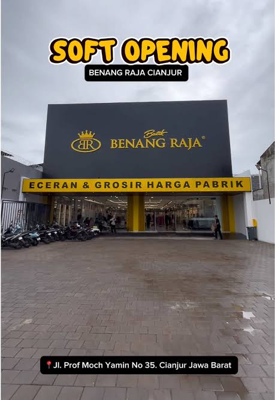
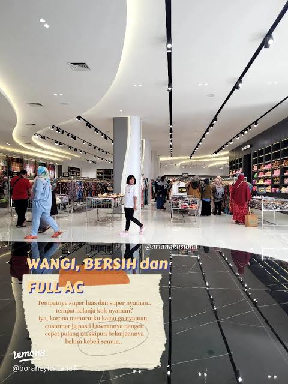
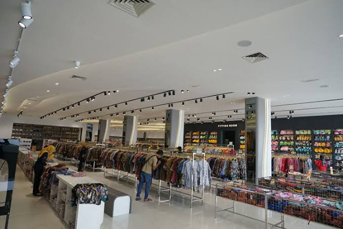

Soft Opening — Jl. Prof Moch Yamin 35Eceran & grosir harga pabrik · parkir luas · seret untuk melihat sekeliling



CARA PAKAI
seret geser panorama titik kuning pindah scan strip bawah loncat lokasi. Di HP: usap satu jari. Foto 100% asli toko, tanpa render ulang.
ADAPTIF OTOMATIS
Mode ini <150KB JS. Di HP kentang, Ken Burns berhenti otomatis dan jadi swipe foto — tetap bisa “masuk toko”. Pasang: ganti isi #diorama di section #toko.